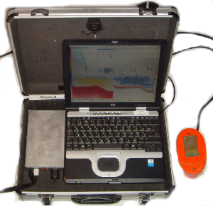

Гидроакустический высокочастотный программно-технический комплекс "PanCor"

Комплекс “PanCor” предназначен для количественной оценки запасов гидробионтов гидроакустическим методом в реальном и отложенном времени в научных и прикладных рыбохозяйственных работах на мелководных акваториях внутренних водоемов и прибрежных районов морей
Парадигмой создания системы является построение программно-управляемого высокочастотного генератора-приемника с многолучевой антенной горизонтального секторного обзора с вводом навигационных данных с внешнего приемника спутниковой навигации. Основные технические характеристики комплекса представлены в таблице:| Электрическая мощность на антенне (переключаемая), Вт | 40 - 80 |
| Рабочая частота, кГц | 455 |
| Ширина характеристики направленности одного луча на уровне -6 дБ, град. | 10 |
| Ширина многолучевого сектора на одной станции в плоскости веера лучей, град. | 80 |
| Частота следования посылок, Гц | 4 - 6 |
| Длительность посылки, мс | 0.1 - 0.6 |
| Максимальная дистанция регистрации одиночной рыбы, силой цели -50 дБ (8 - 10 см), м | 20 |
| Глубина места регистрации одиночной рыбы в горизонтальном режиме, м | < 1 |
| Электрическое питание, в | 12 |
Программная часть комплекса «PanCor» предназначена для использования на компьютерах платформы х86 под управлением ОС “Windows” и состоит из двух частей:
- программы сбора информации, используемой непосредственно на съемках;
- программы камеральной обработки полученных данных.
- аналого-цифровое преобразование эхосигнала с программируемыми частотой выборки и усилением, ввод массива за посылку в компьютер при частоте следования посылок 10 – 0.5 Гц;
- преобразование элементов целочисленного массива в логарифмические значения амплитуды;
- программную корректировку значений элементов массива по закону 40Lg R с учетом параметризованных значений скорости звука, коэффициента затухания и значений коэффициентов усиления ВАРУ эхолота;
- масштабирование элементов массива относительно реперного значения амплитуды, определяемого по стандартной методике гидроакустической калибровки по эталонной цели;
- автоматическое определение положения дна с динамическим определением значения донного дискриминатора, учетом длительности донного сигнала, его формы и наследования ожидания донного сигнала по предыдущим реализациям для более полного учета придонных объектов;
- визуализацию процесса в привычном виде движущейся эхограммы, цветной или черно-белой (по выбору пользователя) с возможностью фазировки диапазона;
- автоматическое разделение одиночных и групповых целей по параметризованному двухстороннему критерию длительности с независимой параллельной корректировкой их амплитуд по законам 20Lg R и 40Lg R;
- визуализацию, в виде гистограммы, входного амплитудного распределения одиночных целей и восстановленного методом Крейга - Форбса распределения силы цели одиночных рыб за лаг и в слое, выбранных пользователем;
- вычисление и визуализацию, в виде таблицы, гидроакустических характеристик поверхностного и объемного рассеивания зарегистрированных объектов;
- ввод и визуализацию за каждую посылку навигационных данных с приемника GPS, набор навигационных данных определяется по желанию пользователя, по умолчанию – только широта и долгота места;
- электронную картографию по OLE-технологии с использованием геоинформационных продуктов других производителей, работающих как сервер вне процесса;
- запись на жесткий диск файла с оцифрованным эхосигналом и навигационными данными для последующей камеральной обработки, в заголовке файла записываются параметры системы при проведении съемки;
- контекстную справочную систему.
- раздельный просмотр кадра с одиночными целями или множественными. В кадре с одиночными целями, по отслеженным следам одиночных рыб, определяется фактическое число одиночных целей, попавших в зону обнаружения, а по максимуму амплитуды в каждом отслеженном следе, определяется реальная амплитуда сигнала от конкретной рыбы в момент нахождения её в максимальной близости к оси излучателя. Такой подход обеспечивает более аккуратное преобразование Крейга – Форбса для восстановления распределения силы цели;
- ручное определение положения дна. В случаях сложного рельефа или плотных придонных скоплений рыбы автоматический алгоритм поиска дна может захватывать дно или игнорировать рыбу, в этом случае пользователю предоставляется возможность ручной прорисовки дна, основываясь на своем опыте и человеческих возможностях по распознаванию образов. Такой подход обеспечивает более полный учет придонных объектов;
- интерактивное определение пользователем слоя обработки в кадре или фрагмента эхограммы;
- электронную картографию по OLE-технологии с использованием геоинформационных продуктов других производителей, работающих как сервер вне процесса;
- табличное представление характеристик обратного рассеивания и плотностей, зарегистрированных за кадр или фрагмент скоплений;
- восстановление размерного распределения одиночных рыб по восстановленному распределению силы цели. По умолчанию применяется зависимость Лоува, но предусмотрена возможность изменения вида зависимости длина – сила цели;
- возможность использования размерно-видовых данных контрольных обловов при получении значений плотности методом эхоинтегрирования;
- формирование и запись на диск результатов обработки файла в формате, импортируемом в известные табличные и текстовые редакторы;
- вывод результатов и эхограмм на печать;
- контекстная справочная система.